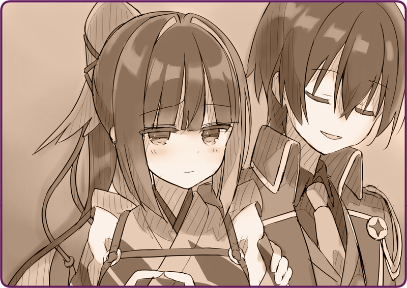

Tôi đẩy
Hình nhân Cơ khí nông nghiệp nọ từ đằng sau. May mắn thay, vì mặt đất đã phần nào bị đóng băng nên dù không dùng quá nhiều lực thì nó vẫn trượt đi khá dễ dàng.
Cô bé: “Chị gì ơi, không sao thật chứ ạ?”
Đang ngồi trên Hình nhân Cơ khí, cô bé ấy nhìn về phía sau lo lắng cho tôi.
Tôi nở nụ cười với cô bé ấy trong khi hơi nước đang bốc lên từ cặp.
Cô bé: “... Rosa.”
Rosa: “Nghĩa là [hoa hồng]. Vậy… chị tên là gì thế?”
Tuy thoáng hoang mang, nhưng rốt cuộc tôi vẫn ngẩng mặt lên đáp.
Rosa: “Phì!”
Vừa nghe tôi tìm cách giải thích tên mình, cô bé chợt phì cười.
Rosa: “Em biết quạ là con gì mà. Tên gì mà kỳ cục…”
＊ ＊ ＊
Nagi: “Tại nhiên liệu cũ bị lắng đọng trong bồn chứa đây mà.”
Cuối cùng tôi đã đẩy được Hình nhân Cơ khí kia về đến dinh thự.
Chủ nhân chẳng có vẻ gì là ngạc nhiên lắm. Người ấy quan sát Hình nhân một hồi với vẻ hứng thú nhất định, rồi bắt tay vào sửa chữa sau khi lắng nghe đôi ba phần sự việc.
Nagi: “Vậy nên mới xảy ra tình trạng khó đốt nhiên liệu. Em phải xả cạn nhiên liệu trước khi mùa đông đến.”
Tại nhà kho, người ấy cầm đồ nghề trên tay loay hoay bên trong bồn chứa và ngay lập tức chỉ ra vấn đề.
Rosa: “Năm nào tụi em cũng làm thế mà…”
Nagi: “Nên làm kỹ hơn một chút. Dạo gần đây nhiên liệu có pha nhiều tạp chất lắm.”
Rosa: “Đó chẳng phải là do Hoàng Quốc chiếm hết nhiên liệu tốt rồi hay sao.”
Nagi: “Hahaha, cũng không sai.”
Dường như người ấy đang làm sạch bồn chứa bằng hóa chất.
Bộ đồng phục vừa mới khô giờ đây đã lại lấm bẩn, nhưng có lẽ để lát nữa giặt lại là được.
Rosa: “Hai người đúng là kỳ lạ thật đó.”
Rosa: “Là người phương Đông mà chẳng ra vẻ ta đây gì cả.”
Nagi: “Đặc biệt là mấy ông quân nhân ấy nhỉ.”
Rosa: “Đúng.”
Nagi: “Tôi vốn chỉ là một kỹ sư nghiên cứu về Hình nhân thôi. Vì tình thế mà tôi nhận trát nhập ngũ rồi bị ném sang một đất nước xa lạ.”
Rosa: “Nên mới đem theo một Hình nhân hầu gái ư?”
Nagi: “À, em ấy là Hình nhân giúp ích cho mọi người mà.”
Nagi: “Đúng không?”
Không sao hiểu được ý nghĩa của những lời ấy, vậy nên tôi chỉ ậm ừ cho qua chuyện.
＊ ＊ ＊
Rosa: “Hết sảy, tuyệt vời!”
Hình nhân Cơ khí đã có thể nhả hơi nước một cách trơn tru.
Ngồi trên lưng nó, Rosa cười tít mắt.
Đã động tay vào làm thì việc sửa chữa diễn ra rất nhanh chóng.
Nagi: “Có vẻ như cơ quan lý luận đang phải chịu tải khá lớn vì bị ép nhận mệnh lệnh quá nhiều lần. Sẽ mất chút thời gian để khởi động đấy, nên cứ kiên nhẫn nhé.”
Rosa: “Thay luôn được không ạ?
Nagi: “Cơ quan lý luận có cơ chế tự phục hồi, nên để một thời gian là nó sẽ tự sửa thôi. Nhưng nếu dùng quá tay thì sẽ không được thế đâu, thành ra nhớ đối xử với nó cẩn thận vào nhé.”
Rosa: “Em hiểu rồi ạ!”
Rosa: “Vâng ạ, cảm ơn hai người!”
Cô bé ấy cùng Hình nhân Cơ khí vẫy tay ra về.
Nagi: “Em làm tốt lắm.”
Nagi: “Đừng nói thế, đây đâu phải chuyện ai cũng làm được.”

Bộp bộp, người ấy vỗ vai tôi.
Đâu đó trong tôi là một cảm giác lạ lẫm, vừa ngượng nghịu, vừa không thoải mái.
Tạm bỏ qua cảm xúc đó, tôi lên tiếng hỏi.
Khi thấy Hình nhân Cơ khí vận hành hỏng giữa đường, tôi đã cố kết nối với cơ quan lý luận của nó hòng tìm ra nguyên nhân, nhưng lại bị gián đoạn bởi một cảm giác bỏng như lửa đốt.
Nagi: “Xin lỗi, đáng ra tôi phải nói với em từ sớm.”
Chủ nhân gãi đầu, thoáng lộ vẻ khó xử.
Nagi: “Đó là lỗi lớn nhất. Cơ quan lý luận của em bị hỏng mất rồi.”
Khung cảnh trước mắt tôi cơ hồ bị bao phủ trong một màu đen kịt.
Điều này khiến loại vấn đề như thay đổi thân thể nhân tạo trở nên thật tầm thường.
Nagi: “Tất nhiên là như vậy rồi.”
Nagi: “Tôi nói rồi mà, cơ quan lý luận có cơ chế tự phục hồi. Cứ để một thời gian là nó sẽ trở lại như cũ ngay.”
Nagi: “Tôi không rõ. Một năm, hai năm… hoặc có thể hơn thế.”
Nagi: “Nhưng mà, tôi thì nghĩ thế này.”
Chủ nhân nặn ra một nụ cười hoan hỉ, hẳn là do ngữ điệu của tôi lộ rõ vẻ chán chường.
Nagi: “Vai trò của Hình nhân đâu chỉ có việc chỉ huy. Ngoài chiến đấu thì em cũng có thể giúp đỡ mọi người…”
Tuy nhiên, những lời thừa thãi ấy chỉ đang xát muối vào vết thương của tôi mà thôi.
Chợt tôi nhận ra, chất làm mát đang chảy thành dòng từ khóe mắt mình.
Đó là bằng chứng cho thấy tôi đang mất tự chủ.
Nagi: “Karasuba, bình tĩnh lại đi.”
Tôi cố sức ngăn chúng chảy ra, nhưng cuối cùng chỉ phản tác dụng.
Ít nhất không muốn ai thấy vẻ mặt thảm hại của mình, nên tôi cúi mặt xuống, vai khẽ run.
Nagi: “.........”
Trước hành động ấy, chủ nhân chỉ lặng lẽ xoa vai tôi, không nói một lời.

 “Hai… ba…!”
“Hai… ba…!”